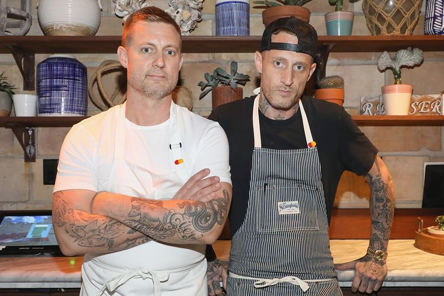

Our Story
Little Lemon began with two brothers, Mario and Adrian, who brought their passion for Mediterranean cuisine from Italy to Chicago. Inspired by family recipes, fresh ingredients, and the welcoming culture of Mediterranean dining, they created a restaurant that blends tradition with modern flavors.
From handcrafted pasta dishes to vibrant seasonal specials, Little Lemon was built to be a place where people can enjoy comforting meals in a warm and relaxed setting. Over time, the restaurant became known for its approachable atmosphere, rotating menu, and dedication to quality food made with care.
